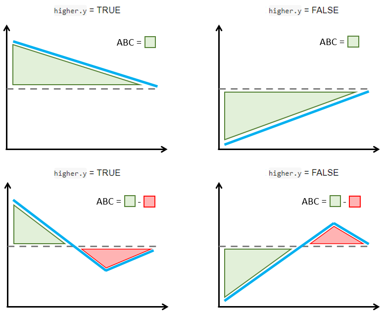

Theoretical details
Vignette 4 of 4
October 05, 2024
Source:vignettes/Theoretical-details.Rmd
Theoretical-details.Rmd
precmed: Precision Medicine in R
A doubly robust precision medicine approach to estimate and validate conditional average treatment effects
Theoretical details - Count outcomes
The CATE score represents an individual-level treatment effect expressed as a rate ratio for count outcomes. It can be estimated with boosting, Poisson regression, negative binomial regression, and the doubly robust estimator two regressions (Yadlowsky et al. 2020) applied separately by treatment group or with the other doubly robust estimator contrast regression (Yadlowsky et al. 2020) applied to the entire data set.
Assume that the following data are recorded for each of observations:
- is a binary treatment taking value 0 or 1.
- is a vector of baseline covariates.
- is a count outcome.
- is the exposure time during which is recorded. It can vary across observations.
The objective is to estimate the ratio-based CATE score defined as
where is the potential outcome if the patient received the treatment . is interpreted as the individualized log-rate ratio of treatment 1 over treatment 0 conditional on the baseline covariates.
The package offers 5 methods to estimate the CATE score: Poisson regression, negative binomial regression, boosting, two regressions, and contrast regression.
Poisson
Estimate the conditional mean outcome given baseline covariates and log-transformed exposure time as the offset separately in each treatment group (i.e., for where is the with an intercept) with Poisson regression. Denote the prediction for one time unit as .
The CATE score with Poisson is the plug-in estimator
Negative binomial
Follow the same step as in Poisson but replace Poisson regression with negative binomial regression in step 1.
Boosting
-
Estimate the conditional mean outcome given baseline covariates and log-transformed exposure time as the offset separately in each treatment group (i.e., for ) with Poisson-based gradient boosting regression method. Denote the prediction for one time unit as .
- The base learners are regression trees with depth specified with the
argument
tree.depthincatecvcount()andcatefitcount(). Default is 2. - The number of trees in boosting is selected via cross-validation
with a maximum number of trees specificed with the argument
n.treesincatecvcount()andcatefitcount(). Default is 200.
- The base learners are regression trees with depth specified with the
argument
The CATE score with boosting is the plug-in estimator
Two regressions
Randomly separate the data into (
Kfold) non-overlapping parts of approximately equal sizes, .-
For each fold , and separately by treatment group :
2.1 Estimate the conditional mean outcome given baseline covariates and log-transformed exposure time as the offset with the Poisson-based gradient boosting regression method based on observations without the kth fold, , and denote the prediction as . This is the initial nonparametric prediction of the potential outcome.
2.2 Estimate the PS based on . Denote the estimated PS as and estimate the weights with denoting the treatment received.
2.3 Solve the following weighted estimating equation by fitting a Poisson regression with as the response, and as the covariates, as the offset, and as weight:
$$S(\alpha_{rk}, \boldsymbol{\gamma_{rk}})=\sum_{i \in D_{-k}} \hat W(r) \pmatrix{\text{log}\left(\hat Y^{(r)}(\boldsymbol{x},1)\right)\\\boldsymbol{\tilde x}}\left(Y - \text{exp}\left(\alpha_{rk}\text{log}\left(\hat Y^{(r)}(\boldsymbol{x},1)\right)+\boldsymbol{\gamma_{rk}^T\boldsymbol{\tilde x}}\right)\times T\right)=0$$
where denotes individual observations. Denote the roots by .
Solve the following doubly robust estimating equation by fitting a Poisson regression with as the response, as the covariates, and no offset or weight: Denote the estimator as .
Repeat steps 1-3 with bootstrap samples and denote the estimator in the sample. The final estimator is the mean of the .
The CATE score with two regressions is
Contrast regression
Randomly separate the data into (
Kfold) non-overlapping parts of approximately equal sizes, .-
For each fold , and separately by treatment group :
2.1 Estimate the conditional mean outcome given baseline covariates and log-transformed exposure time as the offset with the Poisson-based gradient boosting regression method based on observations without the kth fold, , and denote the prediction as . This is the initial nonparametric prediction of the potential outcome.
2.2 Estimate the PS based on . Denote the estimated PS as .
Solve the following doubly robust estimating equation by Newton-Raphson method or using a L2-norm score method if the former fails to converge: Denote the estimator as .
Repeat steps 1-3 with bootstrap samples and denote the estimator in the sample. The final estimator is the mean of the .
The CATE score with contrast regression is
Validation curves and the ABC statistics
The ABC statistic represents the area between the validation curve and the ATE as described by (Zhao et al. 2013). For a single CV iteration, it is implemented in the training and validation sets separately as following:
Step 1. Calculate the ATE in the training or validation sets.
Step 2. Calculate the ATE in 100 nested subgroups
based on the estimated CATE score and derive the corresponding
validation curve. Subgroups are defined with 100 equally-spaced
proportions from min(prop.cutoff) to
max(prop.cutoff) to ensure that enough data points are
available to build the validation curve.
Step 3. The ABC is calculated with
auc() from utility.R using the natural cubic
spline interpolation, which calculates the area between the horizontal
line with y-intercept at the ATE calculated in step 1
over the range
[min(prop.cutoff),max(prop.cutoff)]
(y) and the validation curve calculated in step
2 (x).
The function plot() allows the user to combine
validation curves from 2 or more CV iterations (i.e.,
cv.n > 1). There are 2 ways to combine the validation
curves:
The option
combine=“median” takes the median of the ATEs across all CV iterations in step 1 and the median of the ATEs in the 100 nested subgroups in step 2.The option
combine=“mean” takes the mean of the ATEs across all CV iterations in step 1 and the mean of the ATEs in the 100 nested subgroups in step 2.
In either case, the ABC calculations are carried out as in step 3 with the resulting x and y.
The figure below explains how the ABC is calculated with a simple schema. The ABC calculations are such that larger positive ABC values always indicate more treatment effect heterogeneity. This is implemented by considering separately the cases when larger or smaller outcomes are preferred.
If larger count outcomes are preferred (
higher.y = TRUE, e.g., positive events like number of motor developmental milestones reached), a validation curve above the ATE line and decreasing towards that line is synonym with treatment effect heterogeneity (top left figure). However, sections of the validation curve below the ATE line indicate inability to capture treatment effect heterogeneity (bottom left figure). Hence, the ABC is defined by subtracting the areas below the ATE line (red) from the areas above the ATE line (green) such that larger positive ABC are preferred.If smaller count outcomes are preferred (
higher.y = FALSE, e.g., negative events like number of relapses), a validation curve below the ATE line and increasing towards that line is synonym with treatment effect heterogeneity (top right figure). However, sections of the validation curve above the ATE line indicate inability to capture treatment effect heterogeneity (bottom right figure). Hence, the ABC is defined by subtracting the areas above the ATE line (red) from the areas below the ATE line (green) such that larger positive ABC are preferred.

ABC calculation examples in relation with higher.y
argument in catecv() and catefit(). Validation
curves are represented with a blue line and the dashed line is the
ATE
Theoretical details - Survival outcomes
The CATE score represents an individual-level treatment effect for survival data, estimated with random forest, boosting, Poisson regression, and the doubly robust estimator (two regressions, (Yadlowsky et al. 2020)) applied separately by treatment group or with the other doubly robust estimators (contrast regression, (Yadlowsky et al. 2020)) applied to the entire data set.
Assume that the following data are recorded for each of observations:
- is a binary treatment taking value 0 or 1.
- is a vector of baseline covariates.
- is a survival time.
- is a censoring time.
- is the minimum between and .
- is an indicator taking value 1 if and 0 otherwise.
- is a truncation time for restricted mean time lost.
The objective is to estimate the ratio-based CATE score defined as
where is the potential survival time if the patient received the treatment . is interpreted as the individualized logarithm restricted mean time lost (RMTL) ratio of treatment 1 over treatment 0 conditional on the baseline covariates.
The package offers 5 methods to estimate the CATE score: Poisson regression, random forest, boosting, two regressions, and contrast regression.
Poisson
Estimate the conditional mean RMTL given baseline covariates separately in each treatment group (i.e., for where is the with an intercept) with Poisson regression weighted with IPCW. Denote the prediction as .
The CATE score with Poisson is the plug-in estimator
Boosting
-
Estimate the conditional mean RMTL given baseline covariates separately in each treatment group (i.e., for ) with Poisson-based gradient boosting regression method weighted with IPCW. Denote the prediction as .
- The number of trees is specificed with the argument
n.trees.boosting. Default is 200. - The depth of trees is specified with the argument
tree.depth. Default is 2.
- The number of trees is specificed with the argument
The CATE score with boosting is the plug-in estimator
Random forest
-
Estimate the conditional mean RMTL given baseline covariates separately in each treatment group (i.e., for ) with survival random forest. Denote the prediction as .
- The number of trees in boosting is selected via CV with a maximum
number of trees specificed with the argument
n.trees.rf. Default is 1,000. - The base learners are regression trees with depth specified with the
argument
tree.depth. Default is 2.
- The number of trees in boosting is selected via CV with a maximum
number of trees specificed with the argument
The CATE score with boosting is the plug-in estimator
Two regressions
Randomly separate the data into (
Kfold) non-overlapping parts of approximately equal sizes, .-
For each fold , and separately by treatment arm :
2.1 Estimate the conditional mean RMTL given baseline covariates with the Poisson-based gradient boosting regression method (
initial.predictor.method = "boosting") based on observations without the kth fold, , and denote the prediction as . This is the initial nonparametric prediction of the potential outcome. Other methods can be used to generate an initial prediction (seeinitial.predictor.methodargument).2.2 Estimate the propensity score model based on . Denote the estimated PS as and estimate the weights with denoting the treatment received.
2.3 Estimate the IPCW:
where is a consistent estimator of the survival function of the censoring time given the covariate , for example, using a Cox model and the Breslow estimator for the cumulative baseline hazard function (
ipcw.method = "breslow").2.4 Solve the following weighted estimating equation by fitting a Poisson regression with as the response, and as the covariates, and as weight:
Solve the following doubly robust estimating equation by fitting a Poisson regression with as the response, as the covariates, and no offset or weight: Denote the estimator as .
Repeat steps 1-3 with bootstrap samples (
B) and denote the estimator in the sample. The final estimator is the mean of the .The CATE score with two regression is
Contrast regression
Randomly separate the data into (
Kfold) non-overlapping parts of approximately equal sizes, .-
For each fold , and separately by treatment arm :
2.1 Estimate the conditional mean RMTL given baseline covariates with the Poisson-based gradient boosting regression method (
initial.predictor.method = "boosting") based on observations without the kth fold, , and denote the prediction as . This is the initial nonparametric prediction of the potential outcome. Other methods can be used to generate an initial prediction (seeinitial.predictor.methodargument).2.2 Estimate the propensity score model based on . Denote the estimated PS as .
2.3 Estimate the IPCW:
where is a consistent estimator of the survival function of the censoring time given the covariate , for example, using a Cox model and the Breslow estimator for the cumulative baseline hazard function (
ipcw.method = "breslow"). Solve the following doubly robust estimating equation by Newton-Raphson method or using a L2-norm score method if the former fails to converge: Denote the estimator as .
Repeat steps 1-3 with bootstrap samples (
B) and denote the estimator in the sample. The final estimator is the mean of the .The CATE score with contrast regression is
Validation curves and the ABC statistics
The ABC statistic represents the area between the validation curve and the ATE as described by (Zhao et al. 2013). For a single CV iteration and a certain CATE score method, it is implemented as following in the training and validation sets separately:
Step 1. Calculate the ATE in the training or validation sets.
Step 2. Calculate the ATE in 100 nested subgroups
and derive the corresponding validation curve. Subgroups are defined
with 100 equally-spaced proportions from min(prop.cutoff)
to max(prop.cutoff) to ensure that enough data points are
available to build the validation curve.
Step 3. The ABC is calculated with
auc() from utility.R using the natural cubic
spline interpolation, which calculates the area between the horizontal
line with y-intercept at the ATE calculated in step 1
(y) and the validation curve calculated in step
2 (x) over the range [min(prop.cutoff),
max(prop.cutoff)].
The function plot() allows the user combining validation
curves from 2 or more CV iterations (i.e., cv.n > 1).
There are 2 ways to combine the validation curves:
The option
combine ="median"takes the median of the ATEs across all CV iterations in step 1 and the median of the ATEs in the 100 nested subgroups in step 2.The option
combine ="mean"takes the mean of the ATEs across all CV iterations in step 1 and the mean of the ATEs in the 100 nested subgroups in step 2.
In either case, the ABC calculations are carried out as in step 3 with the resulting x and y.
The figure below explains how the ABC is calculated with a simple schema. The ABC calculations are such that larger positive ABC values always indicate more treatment effect heterogeneity. This is implemented by considering separately the cases when larger or smaller outcomes are preferred.
If smaller survival outcomes are preferred (
higher.y = FALSE, e.g., time to a positive event like recovery), a validation curve above the ATE line which decreases towards it is synonym with treatment effect heterogeneity (top left figure). However, sections of the validation curve below the ATE line indicate inability to capture treatment effect heterogeneity (bottom left figure). Hence, the ABC is defined by subtracting the areas below the ATE line from the areas above the ATE line such that larger positive ABC are preferred.If larger survival outcomes are preferred (
higher.y = TRUE, e.g., time to a negative event like symptom onset), a validation curve (in blue) below the ATE line (dashed) which increases towards it is synonym with treatment effect heterogeneity (top right figure). However, sections of the validation curve above the ATE line indicate inability to capture treatment effect heterogeneity (bottom right figure). Hence, the ABC is defined by subtracting the areas above the ATE line (in red) from the areas below the ATE line (in green) such that larger positive ABC are preferred.
ABC calculation examples in relation with higher.y
argument in catecv() and catefit(). Validation
curves are represented with a blue line and the dashed line is the
ATE.
Other precmed vignettes in this serie
1. Examples for count outcome
2. Examples for survival
outcome
3. Additional examples
4. Theoretical details